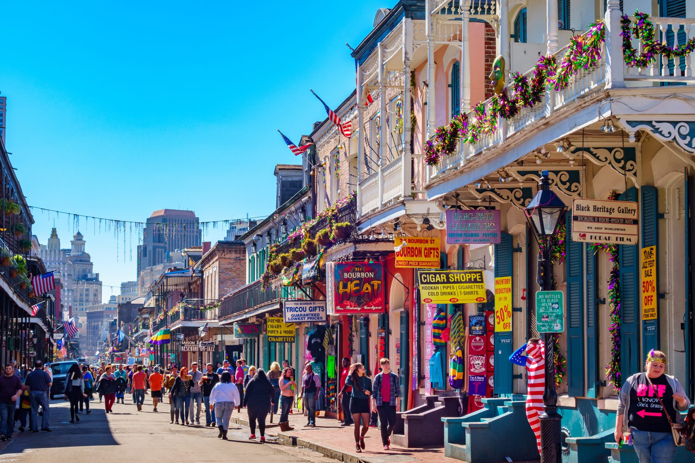
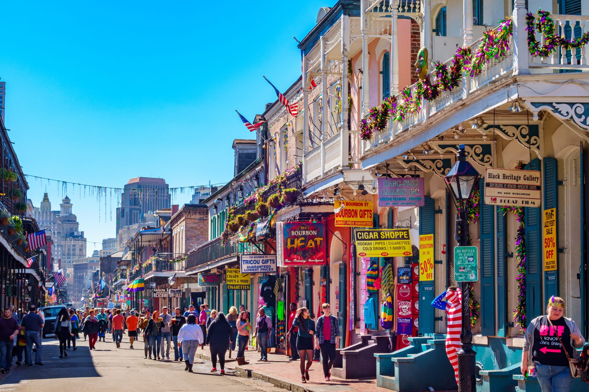

☰


The holiday of Mardi Gras is celebrated in all of Louisiana, including the city of New Orleans. Celebrations are concentrated for about two weeks before and through Shrove Tuesday, the day before Ash Wednesday (the start of lent in the Western Christian tradition). Usually there is one major parade each day (weather permitting); many days have several large parades. The largest and most elaborate parades take place the last five days of the Mardi Gras season. In the final week, many events occur throughout New Orleans and surrounding communities, including parades and balls (some of them masquerade balls). The parades in New Orleans are organized by social clubs known as krewes; most follow the same parade schedule and route each year. The earliest-established krewes were the Mistick Krewe of Comus, the earliest, Rex, the Knights of Momus and the Krewe of Proteus. Several modern "super krewes" are well known for holding large parades and events (often featuring celebrity guests), such as the Krewe of Endymion, the Krewe of Bacchus, as well as the Zulu Social Aid & Pleasure Club—a predominantly African American krewe. Float riders traditionally toss throws into the crowds. The most common throws are strings of colorful plastic beads, doubloons, decorated plastic "throw cups", Moon Pies, and small inexpensive toys. Major krewes follow the same parade schedule and route each year. While many tourists center their Carnival season activities on Bourbon Street, major parades originate in the Uptown and Mid-City districts and follow a route along St. Charles Avenue and Canal Street, on the upriver side of the French Quarter. Walking parades - most notably the Krewe du Vieux and Chewbacchus - also take place downtown in the Faubourg Marigny and French Quarter in the weekends preceding Mardi Gras day. Mardi Gras day traditionally concludes with the "Meeting of the Courts" between Rex and Comus.
LaToya Cantrell (née Wilder; born April 3, 1972) is an American politician serving as the Mayor of
New
Orleans,
Louisiana since May 7, 2018. A Democrat, Cantrell is the first woman to hold the office. Before
becoming
mayor, Cantrell
represented District B on the New Orleans City Council from 2012–2018.
The Carnival season officially begins each year on Jan. 6 -- the Feast of the Epiphany, also called
Twelfth Night or
Kings’ Day. Traditional balls are held in the weeks leading up to the big event.
New Orleans, with its unmatched culture and world-famous music and cuisine, is an exciting place to
be
at any time of
the year. We invite everyone to experience Mardi Gras at least once in their lifetime. Make your
plans
now to be a part
of this great tradition and see firsthand why we say, "Laissez les bon temps rouler!"
"As Mayor of the great City of New Orleans, I invite you to visit our city to experience the
excitement
of Mardi Gras!"
 

Sunday: 8:30am - 11:30am
Monday - Wednesday: 8:30am - 15:00pm
Thursday: 8:30am - 17:30pm
Friday: 8:30am - 16:00am
Saturday: 8:30am - 18:00pm